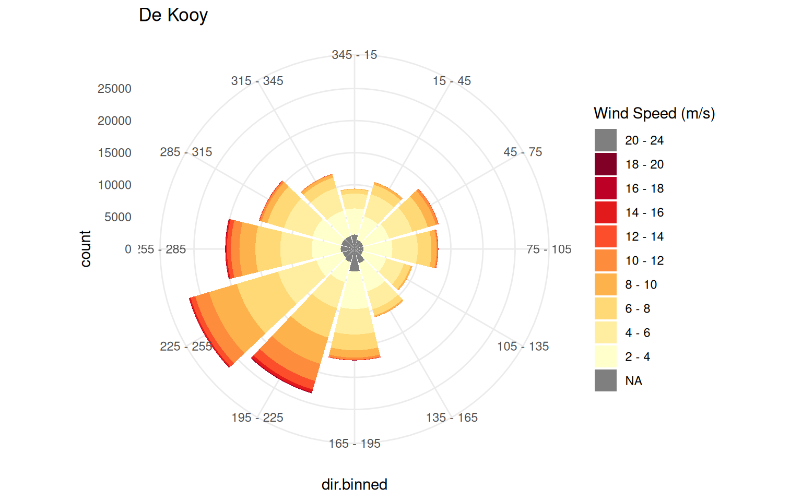
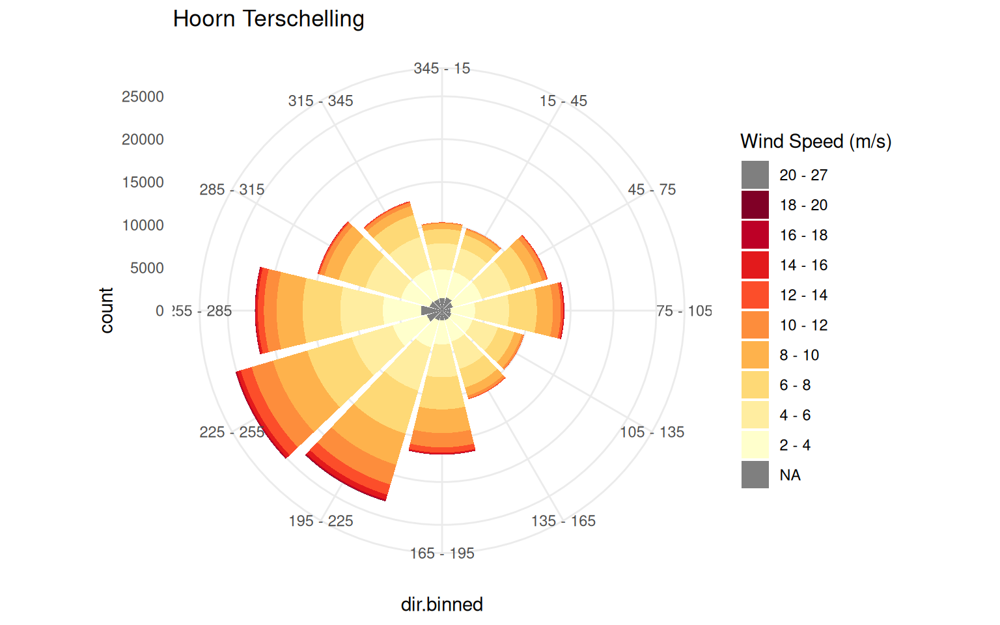
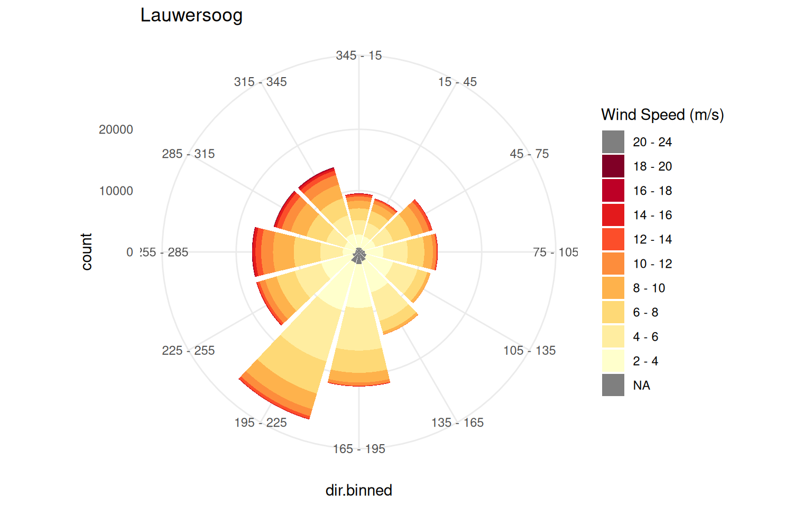
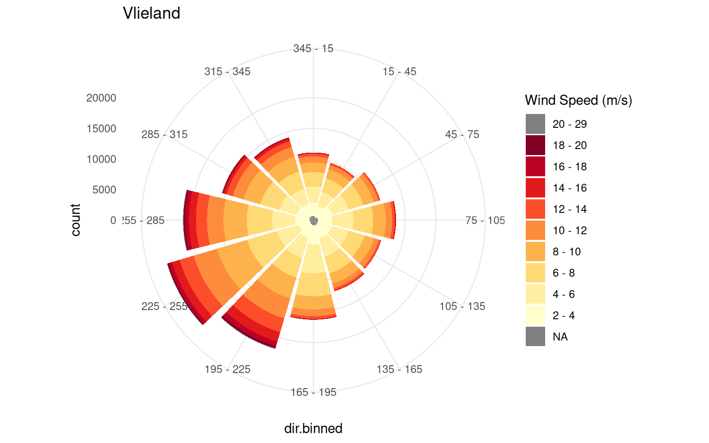
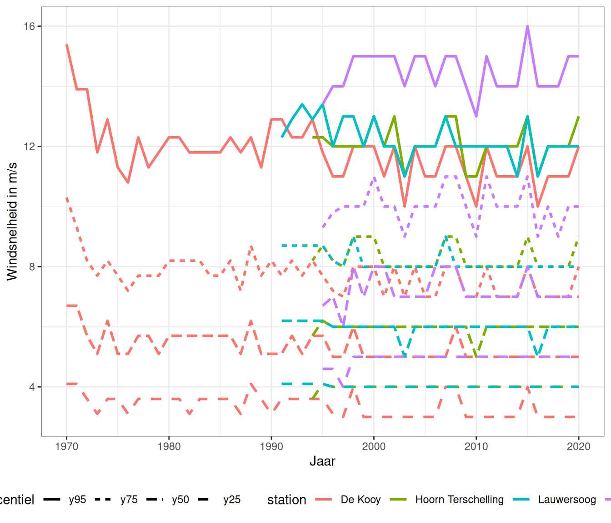
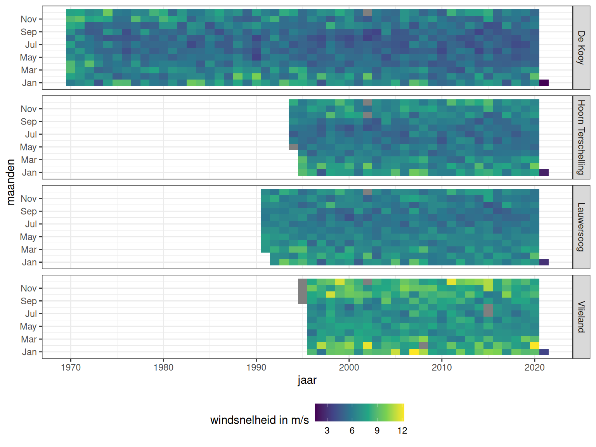
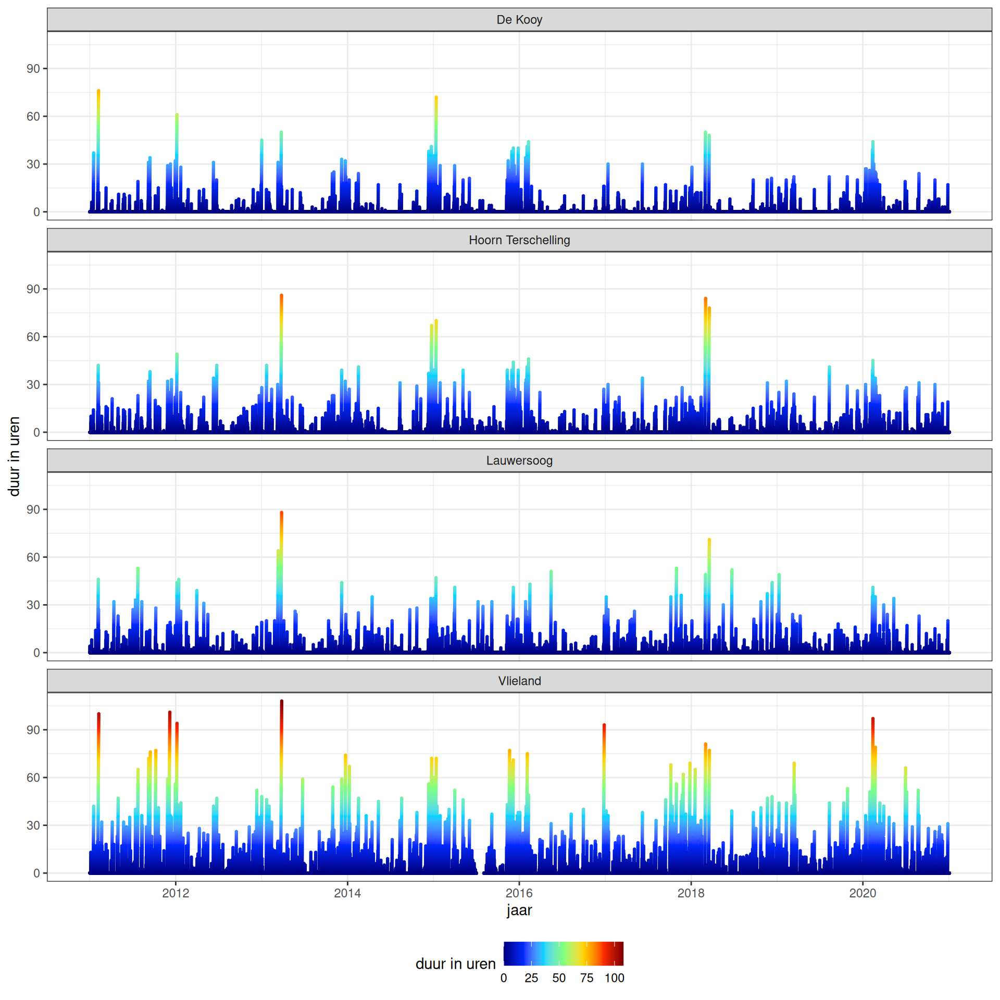
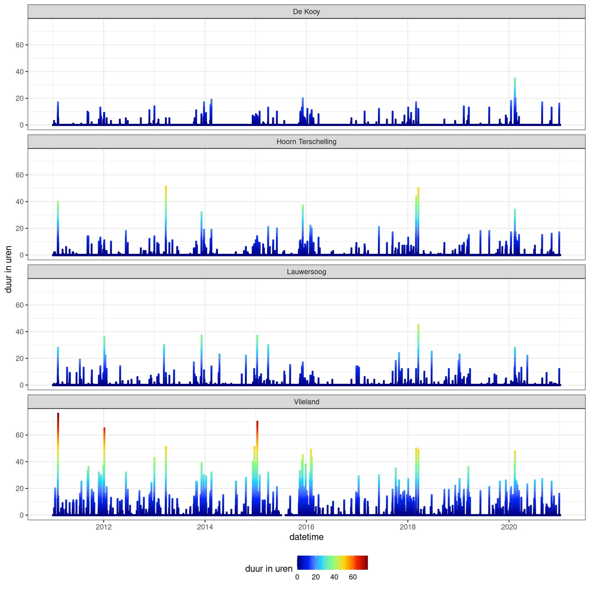
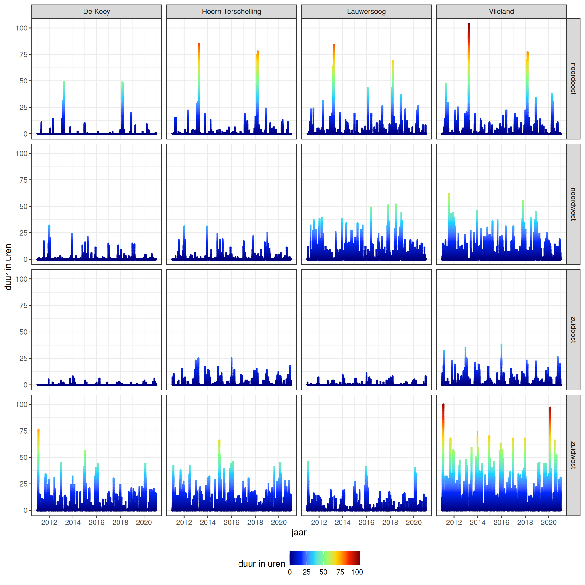
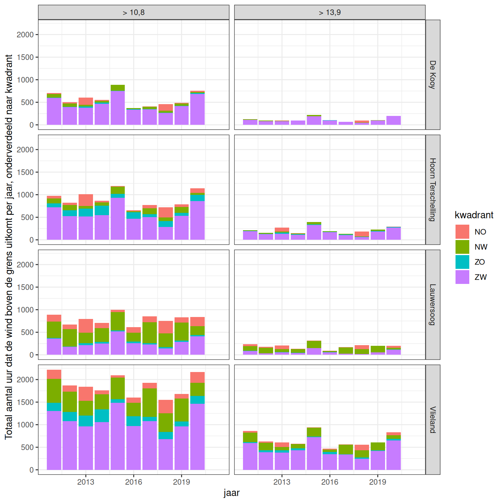

Hoofdstuk 4 Meteorologie
4.1 Afbakening, definitie en herkomst
Belang
In een ondiep systeem zoals de Waddenzee heeft de meteorologie (wind, luchtdruk, temperatuur, instraling en neerslag) een sterke invloed op zowel biotische als abiotische processen. Meteorologie is dus belangrijk voor het beschrijven en verklaren van trends en fluctuaties. Biotische processen zoals algen- en plantengroei worden direct beïnvloed door temperatuur en instraling van zonlicht. Via de abiotiek is naast de saliniteit (mede bepaald door neerslag) vooral de wind van groot belang voor hydromorfologische en ecologische processen: het grootse deel van de golven (zie hoofdstuk 3) in de Waddenzee wordt namelijk lokaal door de wind gegenereerd. Daarnaast is de wind, in combinatie met de luchtdruk, bepalend voor de opzet (of afzet) van waterhoogtes tijdens stormen (zie paragraaf 3.8). Zo kan wind ook voor transporten over de wantijen zorgen, wat van belang is voor de connectiviteit tussen de verschillende kombergingsgebieden.
Afbakening
In dit hoofdstuk is de beschrijving van de meteorologie beperkt tot de wind (richting en sterkte). De temperatuur is in deze systeemrapportage opgenomen als een verklarende waterkwaliteitsparameter in paragraaf 5.2. Deze is het gevolg van, en daarmee informatiever dan, zuiver meteorologische parameters als luchttemperatuur, zoninstraling en bewolking, welke daarom buiten beschouwing zijn gelaten. Luchtdruk en neerslag zijn ook niet opgenomen in deze rapportage. Voor luchtdruk geldt dat getij en wind een veel sterkere invloed op waterstanden hebben, waardoor luchtdruk van ondergeschikt belang is. Neerslag is niet opgenomen omdat de saliniteitsverdeling in de Waddenzee sterker afhangt van het spuien van zoet water dan van directe neerslag. Deze afvoeren zijn daarom wél opgenomen, in paragraaf 3.13.
Databronnen
De wind wordt geanalyseerd en gevisualiseerd op vier KNMI stations (zie bron in Appendix A.5): De Kooy, Lauwersoog, Hoorn Terschelling, Vlieland. Zie figuur 4.1 voor de ligging van deze stations.
Figuur 4.1: Kaart met gebruikte KNMI waarnemingsstations voor de parameter wind.
4.2 Wind
4.2.1 Windsterkte en -richting over de langere termijn
De windsterkte en windrichting vormen samen de basis voor de windforcering. De langjarige windrozen over de periode 1990 tot en met 2018 (figuur 4.2) laten zien dat de wind overwegend uit het zuidwesten komt en de hogere windsnelheden (donkerder rood) overwegend uit het zuidwesten tot noordwesten komen. Er zijn substantiële verschillen tussen de stations, vooral in de windsterkte: de hoogste snelheden worden gemeten op Vlieland, waar wind uit het zuidwesten zowel qua voorkomen als sterkte dominant is. Op Lauwersoog komt de wind weliswaar vaak uit het zuidwesten maar zijn winden uit het noorden sterker.




Figuur 4.2: Windroos over de periode 1990 - 2018. Kleuren geven klassen van windsnelheid aan, de lengte van de spaken de windsterktefrequentie/voorkomen per windrichting.
4.2.2 25, 50, 75 en 95-percentiel van de windsnelheid per jaar
Om meer inzicht te krijgen in trendmatige veranderingen in de windsnelheid, worden de verschillende percentielen van de windsnelheid per jaar weergegeven in figuur 4.3. Doordat de data tot op 1 decimaal achter de komma worden opgeslagen, tonen de figuren een vrij schokkerig verloop. De figuur laat geen duidelijke trends zien. De verschillende percentielen en stations laten een vergelijkbaar verloop zien.

Figuur 4.3: 25, 50, 75 en 95-percentiel van de windsnelheid per jaar. De kleuren geven de stations aan, het lijntype het percentiel voorkomen.
4.2.3 Seizoensvariatie
Hogere windsnelheden komen vaker voor in de winter dan in de zomer. Dit is te zien in een heatmap van de maandgemiddelde windsnelheden, uitgezet tegen jaren (horizontale as) en maanden (verticale as) in figuur 4.4. Hierin is zowel de lange termijn variatie te zien (horizontaal) als de seizoensvariatie (verticaal). Over het geheel gesproken bevestigt dit het beeld dat de windsnelheid in de wintermaanden (de onderste en bovenste banden) hoger is dan in de zomer (de middelste banden). Er lijkt geen structurele trend in de tijd te zijn wat betreft gemiddelde windsnelheid of de variatie per seizoen.

Figuur 4.4: Variatie van windsnelheden over de lange termijn (horizontaal) en over het jaar (verticaal) over de periode 1998 - 2018. Grijze vlakken zijn maanden zonder data.
4.2.4 Periodes met hoge windsterkte
Naast de variatie in windsnelheid in de zomer en de winter, is ook inzicht in stormen of periodes met hoge windsnelheden belangrijk. Hiermee kan inzicht worden gekregen of bepaalde jaren dynamischer zijn geweest of juist kalmer dan gemiddeld. Vanaf een windsnelheid van 20,8 m/s (Windkracht 9 op de Schaal van Beaufort) spreken we van storm, maar in de Waddenzee treden al bij veel lagere windsnelheden forse transporten over de wantijen en toename van de vertroebeling op. Daarom wordt in figuur 4.5 het totaal aantal uren dat de windsterkte > 10,8 m/s (Beaufort 6) was gesommeerd per jaar uitgezet. Figuur 4.6 is hetzelfde, maar dan met de grens op 13,9 m/s (Beaufort 7).

Figuur 4.5: Aantal achtereenvolgende uren dat de windsnelheid boven 10,8 m/s (>Bft 6) is geweest vanaf 2010.

Figuur 4.6: Aantal achtereenvolgende uren dat de windsnelheid boven 13,9 m/s (>Bft 7) is geweest vanaf 2010.
Voor de opwekking van golven en de windopzet en -afzet is niet alleen de windsterkte, maar ook de windrichting van belang. Als de wind uit het zuidwesten komt, strijkt deze vanaf de Afsluitdijk over een lange afstand over de Waddenzee, waardoor er een veel groter verhang kan ontstaan dan bij bijvoorbeeld zuidenwind. In figuur 4.7 zijn de dynamische condities (windsnelheid>10,8 m/s) uitgezet per kwadrant. De meeste energetische condities treden op bij zuidwesten wind, logischerwijs omdat deze wind het vaakst en het hardst uit deze richting waait. Ook uit het noordoosten komt af en toe krachtige wind.
Door het aantal uren te sommeren per jaar (figuur 4.8), kunnen de verschillende jaren onderling beter vergeleken worden. Zo is 2015 een energetisch jaar gebleken, maar ook 2011 en 2020 waren voor alle locaties energetischer dan gemiddeld. Voor de meeste stations zijn winden uit zuidwestelijke richting dominant (zoals de windrozen in figuur 4.2) ook laten zien, maar voor Lauwersoog zijn ook noordwesten winden van vergelijkbaar of groter belang. Vlieland is verreweg de meest dynamische locatie.

Figuur 4.7: Aantal uren dat de windsnelheid aanhoudend boven 10,8 m/s (>Bft 6) is geweest per richting (kwadrant) vanaf 2010.

Figuur 4.8: Totaal aantal uren per jaar, station en kwadrant boven een 10,8 m/s (Bft 6, links) en 13,9 m/s (Bft 7, rechts) grenswaarde.